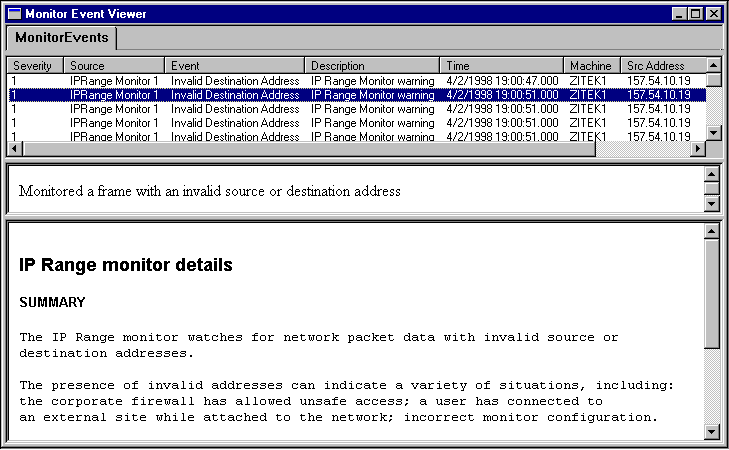

description: Event reference pages (ERPs) can be used connect your monitor to the Network Monitor UI. They can be used to alert end-users about detected conditions and problems, or they can be used to provide suggested fixes or explanatory data.
ms.assetid: '8d218e5f-5d6d-461c-b743-9ab5fc146c28'
title: Monitor Event Reference Pages
ms.topic: article
ms.date: 05/31/2018
Monitor Event Reference Pages
Event reference pages (ERPs) can be used connect your monitor to the Network Monitor UI. They can be used to alert end-users about detected conditions and problems, or they can be used to provide suggested fixes or explanatory data.

Â
Â